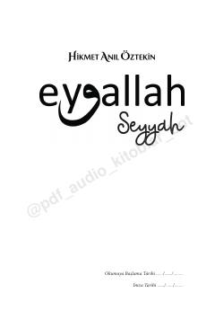

E1Insonni o'zligini anglashga va ma'naviy uyg'onishga chorlovchi hayotiy falsafiy asar.
Ushbu kitob muallifning insonlarni uyg'otish va hayotiy falsafasini ulashishga qaratilgan asarlaridan biridir. Muallif o'zining hayotiy tajribalari va kuzatuvlari orqali o'quvchini o'zligini anglashga va ma'naviy yuksalishga chorlaydi.